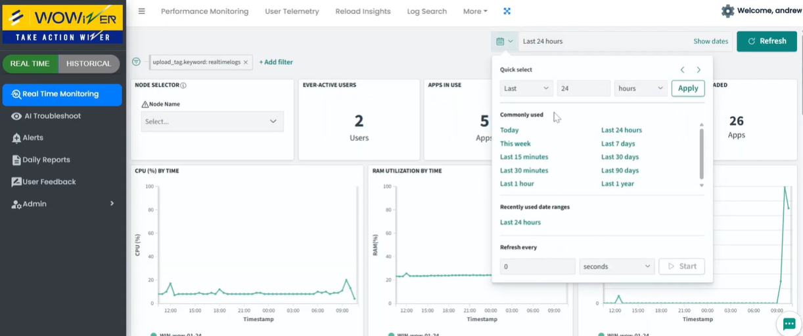
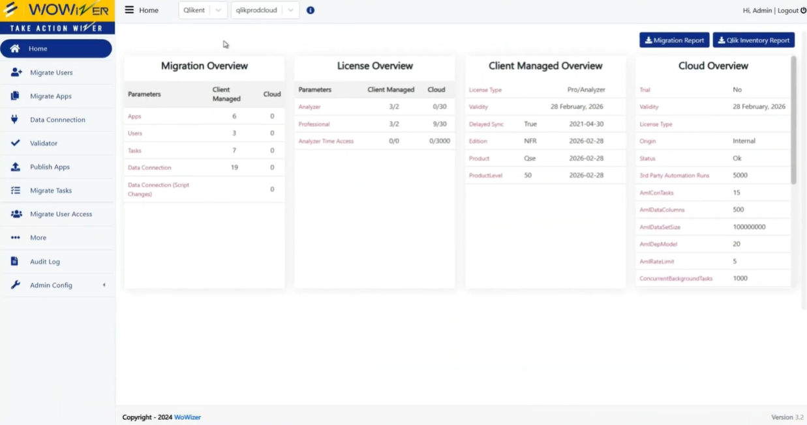

Certificate image not available
10 years turning hard analytics problems into working solutions — from enterprise Qlik products to AI-powered bots and OCR document intelligence.
9+
Years Exp.
7
Products Built
20+
Engineers Trained
875
Udemy Learners
5
Qlik Awards
14+
OSS Extensions
About
I don't build features — I design solutions that make things genuinely easier for the people using them. At Wowizer.ai (Predoole Analytics), I lead Team Wowizer (5 engineers), building enterprise Qlik products across the full platform stack: QlikView, Qlik Sense Enterprise, and Qlik Cloud.
From GDPR-compliance tools to AI bots to cloud migration accelerators — every product starts the same way: find where technology is making someone's work harder than it needs to be, then remove that friction.
"Solution to make life easy for the user."
The filter every decision runs through
Qlik Platform
AI & Integration
Code & Web
Enterprise Clients
AI Work
Building retrieval-augmented architectures before RAG became the industry term. Now going deeper with certified systems and production AI features.
Built a Retrieval-Augmented Generation pipeline — grounding LLM responses in a custom knowledge base for accurate, context-aware answers instead of hallucinations.
Integrated OpenRouter — a unified LLM gateway — using Claude as the primary model. Routes queries across Claude, GPT-4, Mistral and 100+ models through a single API endpoint.
Scanning PAN cards and Aadhaar cards to extract structured KYC data automatically — replacing manual entry, validating vendors before enrollment, and dramatically simplifying the onboarding UX.
Natural language analytics inside Microsoft Teams. Users ask data questions in plain English — Qlik's Associative Engine retrieves and returns chart-level answers. RAG pattern, before RAG was the term.
Same conversational analytics as the Teams Bot, delivered via WhatsApp. Users query Qlik data without leaving the app they're already in.
GDPR-compliance tool for Qlik — real-time auditing of who accesses what data at stream, app, sheet, and row level. Precise testing evidence for Data Protection Officers.
Products I Architected
As solutions architect and R&D lead at Wowizer.ai, I define the problem, design the solution, and lead Team Wowizer (5 engineers) to ship it.

Real-time alert monitoring across all Qlik environments — hosts, apps, tasks, NPrinting — with severity classification and one-click action. The ops dashboard every Qlik MSP needs.

End-to-end migration from Qlik Sense Enterprise to Qlik Cloud — tracking apps, users, tasks, data connections, and licences side-by-side. UAT built in. Full audit trail.
Multi-tenant Qlik Cloud admin — complex task chaining, bulk user provisioning, scheduled backups, disaster recovery.
QlikView → Qlik Cloud migration. Handles the harder path — script compatibility, object mapping, and validation.
Write data back to source systems from within Qlik dashboards — eliminating round-trips to external tools.
Variable Button, Popup Chart, Side Filter, KPI Objects, Date Range Picker and more — used by the Qlik community globally.
View on GitHubCareer
Predoole Analytics · Wowizer.ai · KADAC.ai
Medly Pharmacy · Pune
Clay Logix Pvt. Ltd. · Mumbai
PHP · JavaScript · MySQL
Knowledge Sharing
875 Udemy learners · 20+ engineers trained · YouTube · Medium · Qlik Community
Build custom Qlik Sense extensions from zero — Extension API, HTML/CSS, JavaScript, Qlik object model.
View Course
Automate Qlik report generation and distribution — from basics to scheduled delivery for business users.
View Course
Took 20+ Predoole-hired freshers from zero to independently productive in Qlik Sense Enterprise & Cloud (2023–2024). That cohort now delivers on their own.
Interactive upgrade path calculator for all 33 Qlik Sense Enterprise versions (2016–2023). Covers prerequisites checklist, safe mode version-to-version paths, PostgreSQL migration routes, and EOS dates. Built for the Qlik community.
Recognition
5 awards across 6 years — from Qlik India, Qlik Global, and the community
Global community challenge — school education analysis project
2018 · Qlik GlobalRecognised for innovation in client delivery work
Oct 2019 · Clay LogixBest Innovation — nationally judged by Qlik India
Dec 2019 · Qlik IndiaPersonally recognised by Michael Tarallo, Qlik's Global Community Manager
2019 · Qlik Employee RecognitionQlik Community monthly lead recognition — sustained excellence, 5 years on
Nov 2023 · Qlik CommunityRecognition span
2018 → 2023
Not a one-time burst — sustained recognition across 6 years from different parts of the Qlik ecosystem.
Learning
Edureka · Mar 2026
ID: XR8S5EHF8SCM
Microsoft · Dec 2025
ID: DA9LNBECGNYZ
Microsoft · Dec 2025
ID: 06TNP8NRYRU4
deeplearning.ai / Coursera · 2020
LearnQuest / Coursera · 2020
Coursera · 2020
Udemy
Udemy · 2020
McMaster / UCSD · 2020
Udemy · Jul 2018
ID: UC-X4RDXU18
UC Davis / Coursera
Coursera
University of Toronto / Coursera
Coursera
Coursera
Get In Touch
Open to Qlik solutions architect roles, senior consultant opportunities, and AI-augmented analytics collaborations.
ajaykakkar93@gmail.com
Phone
+91 95944 11469
linkedin.com/in/ajaykakkar93
Location
Mumbai, India
Open to remote & hybrid roles